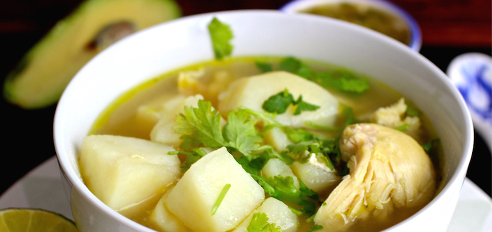

Simple Soup

Caldo colombiano; sencillo para cuando uno está enfermo
Colombian broth; simple for when you're feeling sick
This appropriately named broth is perfect to have when you're feeling sick, or cold. Prepare in large batches to freeze or
refrigerate. Heat it up whenever you're feeling under the weather, or a bit chilly.
Ingredients
- 6 raw chicken drumsticks
- 8-10 cups water
- 1 cup frozen whole kernel corn
- 5-10 sprigs of cilantro
- 4 russet potatoes
- 2 yellow onions (small-medium size)
- 3 garlic cloves
- 3 tbsp butter
- 1 tbsp capers
- 2 tbsp salt
- 1 tsp black pepper
Instructions
- Prep Ingredients
- Loop 5 cilantro sprigs into a knot.
- Cut onions in half.
- Finely chop 1/2 onion (leave others halved).
- Peel & cube potatoes.
- Smash garlic with a knife.
- Sprinkle 1 tbsp of salt on chicken.
- In a deep pot, melt butter on medium-high heat.
- Add chicken and garlic. Toss until golden brown.
- Pour water. Add capers, salt, pepper, cilantro knot.
- Bring to a boil; turn down to low-medium heat.
- Add potatoes, corn and onion.
- Remove from heat after 15-20 minutes or until chicken is cooked, and potato is tender
- Remove whole onions and cilantro knot.
- Optional: remove chicken and shred off bone.
- Optional: finely chop 2 cilantro sprigs to include in broth.
- Enjoy! (Or freeze to use later).
Home Page